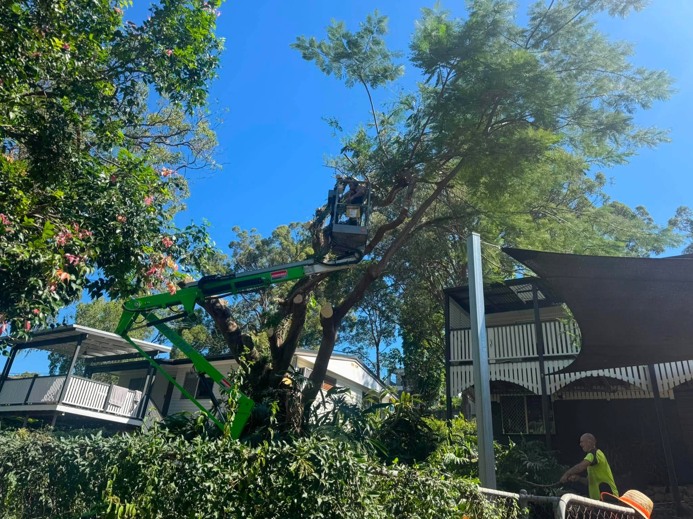
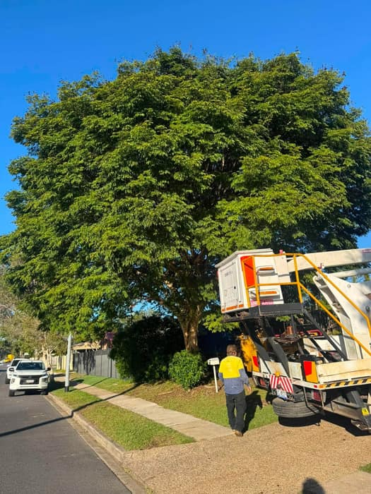
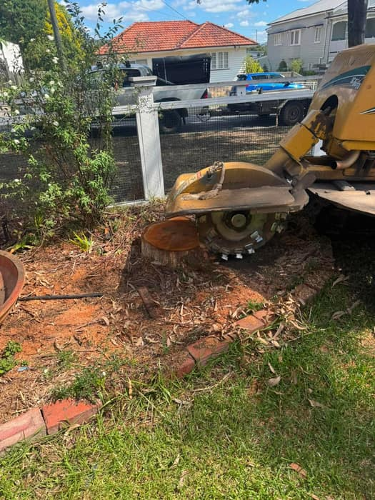
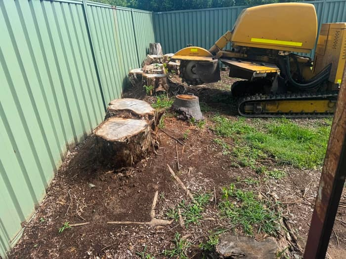
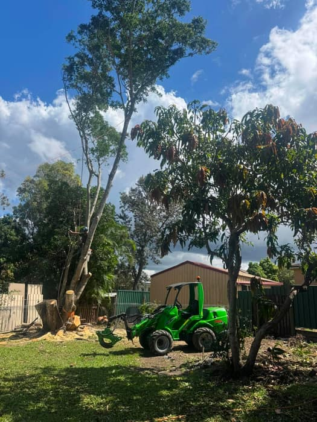
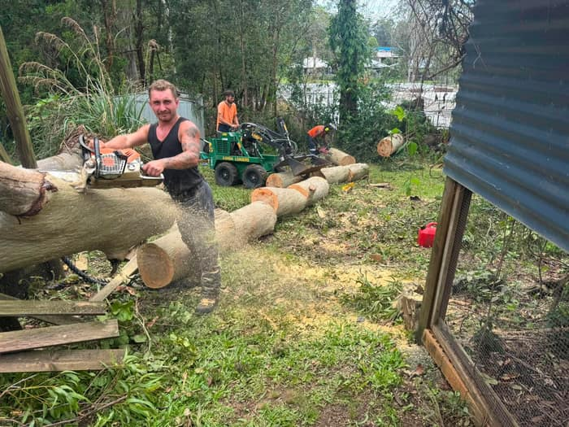
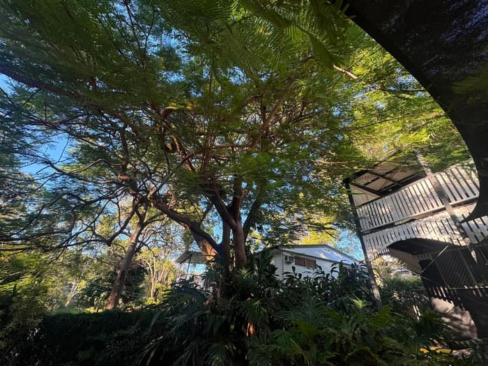
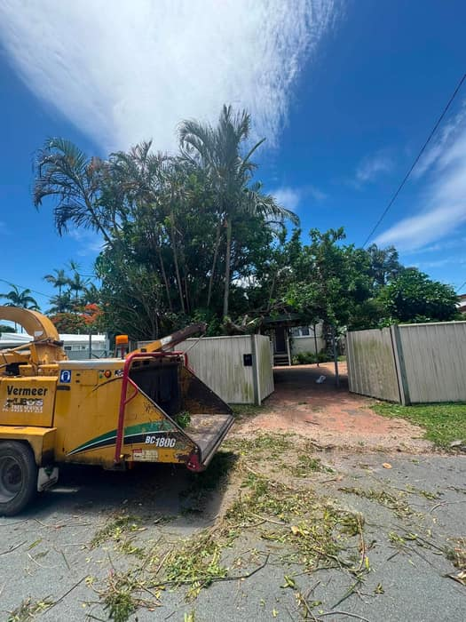

Tree Removal
Safe sectional removal of trees of any size, including tight access blocks and trees near houses, fences and powerlines.
Learn more
From big gum removals to a single stubborn stump, we get the job done safely, tidily and without the drama. Owner-operated, on the Northside, 7 days a week.
Ozzy's is an owner-operated Brisbane tree service based on the Northside. We turn up when we say we will, give you a straight answer and a fair price, and treat your yard like it's our own.
Every tree is different, so we never quote blind. We look at the job, talk through the safest way to get it done, and leave the site cleaner than we found it. Big or small, it's the same standard.
One local crew for the whole job, from the first cut to the final rake-up. Here's what we're known for across Brisbane's Northside.
Safe sectional removal of trees of any size, including tight access blocks and trees near houses, fences and powerlines.
Learn moreCrown thinning, dead-wooding, height reduction and shaping, pruned to Australian Standards so your trees stay healthy.
Learn moreGround out 250–300mm below the surface so you can re-turf, replant or landscape. No trip hazard, no regrowth.
Learn moreFull palm removal or a tidy-up of dead fronds and seed pods, cleared away and disposed of without the mess.
Learn moreFallen trees, hanging limbs and storm damage made safe fast. When a dangerous tree can't wait, neither do we.
Learn moreOvergrown blocks, fence lines and garden clean-ups cleared and chipped, with mulch left for the garden if you want it.
Learn more
No call centres, no sub-contractors you've never met. You deal with the owner from the first quote to the final sweep-up.
Current public liability cover and the right tickets for the work. Certificate of currency available on request.
Cherry picker, mini loader and stump grinder so we can work safely in spots other crews walk away from.
A firm price up front with no nasty surprises, and an honest heads-up if your tree needs council approval.
We chip the branches, rake the mess and cart it away. You're left with a tidy yard, not a worksite.
Call, text or send a few photos. Tell us what's going on and what you'd like sorted.
We assess access, hazards and council status, then give you a clear fixed price.
The crew turns up on time and gets it done safely, with care around your property.
Everything chipped, raked and carted away. We leave the place better than we found it.
A look at some of the trees, stumps and clean-ups we've knocked over lately across the Northside. Every photo is a genuine Ozzy's job.

Cherry picker up a big street tree
Grinding the stump out
Row of stumps ground flush
Avant in the yard, gum coming down
Bucking up the trunk
Big canopy ready for a tidy up
Chipper out frontBased in Chermside and covering the Northside and greater Brisbane. Being local means faster call-outs and less travel on your quote.
Not on the list? We still get out and about. Give us a call and ask.
Don't just take our word for it. We've earned a straight 5.0 across 27 Google reviews by turning up, doing great work and leaving every yard tidy.
Worked with us? We'd love your feedback.
Read & leave a Google reviewA few of the things Brisbane homeowners ask us most. There's more on our services page.
It depends on the tree. Brisbane City Council protects some vegetation under the Natural Assets Local Law and City Plan overlays, and protected trees usually need a permit even on your own property. Plenty of common backyard trees aren't protected. We'll help you check your property's status before any work starts, so you're never caught out.
Every job is different, so we quote on the tree's size, species, access and how close it is to structures and powerlines. Stump grinding is usually priced separately on the stump's size and how hard the timber is. We don't quote blind. You'll get a clear fixed price up front after we've seen the job or some photos.
Yes. Tree work is high-risk, so we carry current public liability insurance to protect your property and the public while we work. We're happy to provide a certificate of currency before the job. We'd always recommend confirming insurance with any tree company you consider.
Always. A full clean-up is included as standard. We chip the branches, rake up the debris and cart it away, leaving your yard tidy. If you'd like the mulch left for your garden beds or some logs cut to firewood, just ask before we start.
Tell us about it and we'll give you a free, no-obligation quote. Most jobs we can price the same week, and emergencies we'll do our best to get to fast.